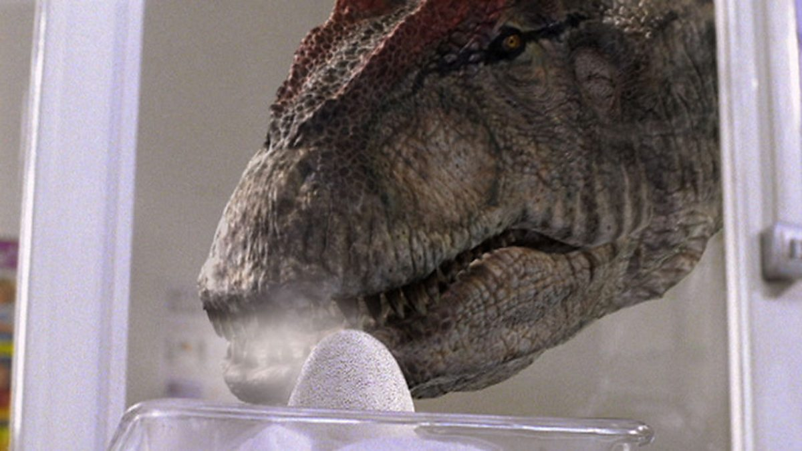
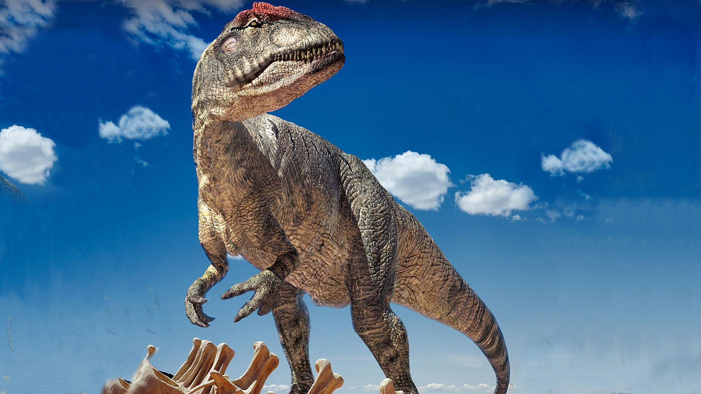
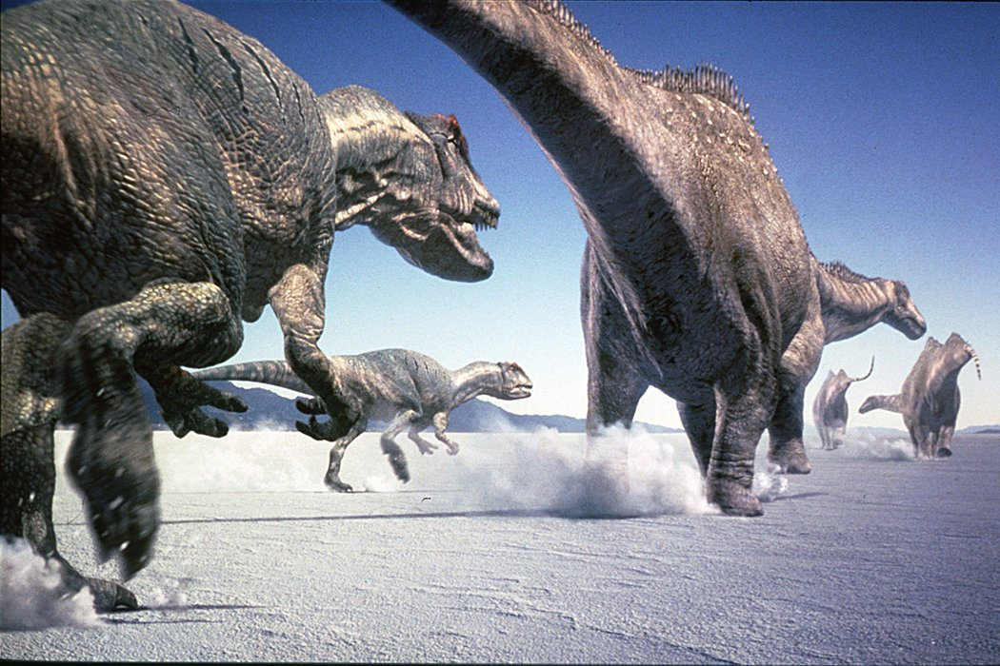
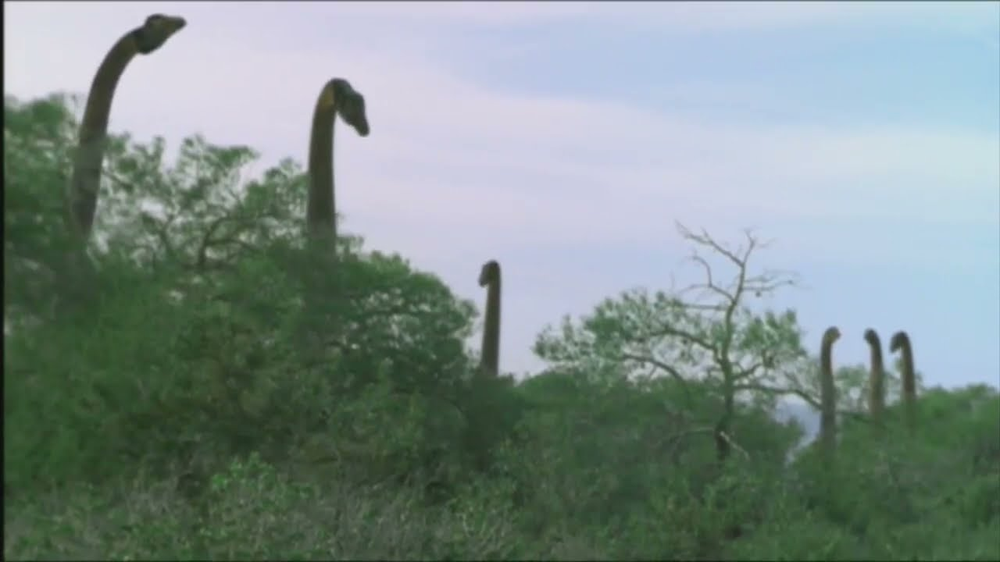
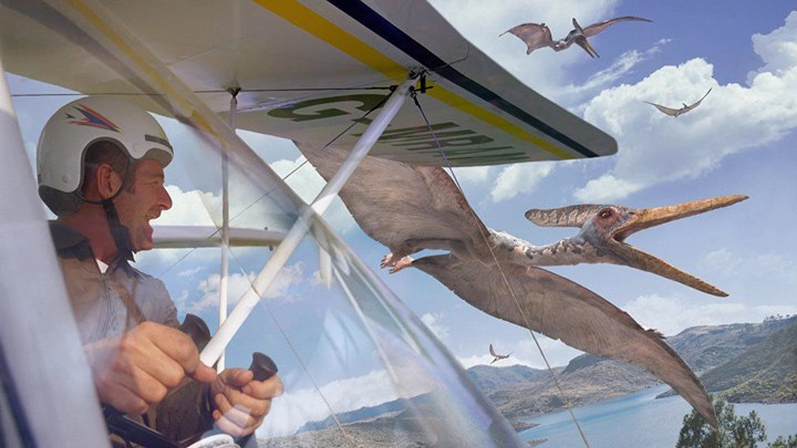
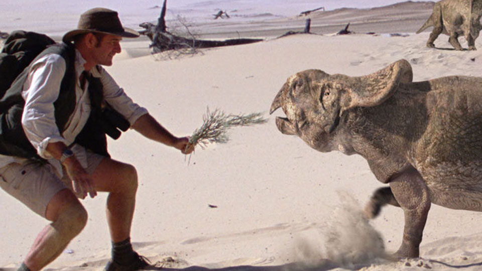
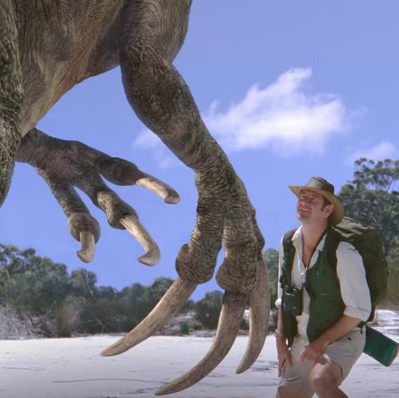
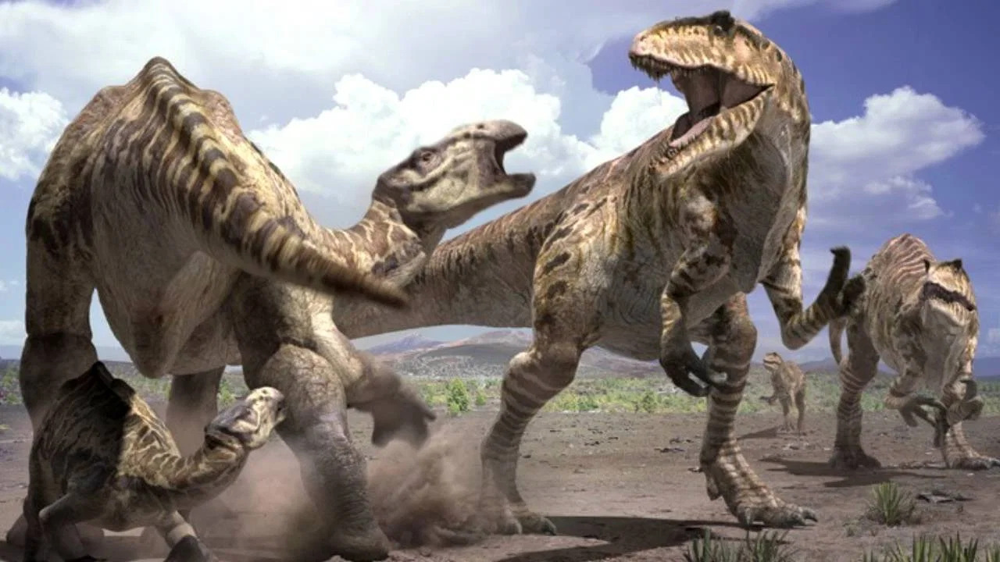

Ranking the Walking With… Spin-Offs
To capitalise on the success of the Walking With… trilogy, the series expanded naturally. I’ve already had the misfortune to review the pig swill known as Walking with Cavemen, yet the series hardly ended there.
Timeline
Starting in chronological order, I intend to tie up any loose ends with my rankings. No, I will not count the documentaries about the documentaries, as that would be silly. Nor Sea Monsters, because it doesn’t even pretend to have a story: it’s too cool for that. Nor Space Odyssey, because I don’t even know what that is.

A Californian (or maybe Jurassic) canyon. The narrow, lush walls provide a perfect backdrop for an atmospheric ambush. Combined with one of the outstanding scores from Ben Bartlett, who composed all this series, and you're onto a winner.
Walking With… Programmes
Ballad of Big Al
Visuals: 6
Gone are the grand, sweeping vistas of Time of Titans. Somehow coexisting in the same ecosystem is this dustbowl, devoid of vegetation, life and scene dressing. We don’t see any

A Californian (or maybe Jurassic) canyon. The narrow, lush walls provide a perfect backdrop for an atmospheric ambush. Combined with one of the outstanding scores from Ben Bartlett, who composed all this series, and you're onto a winner.
Storytelling: 4
Perhaps the greatest advantage this series has from, say, a conventional run-of-the-mill David Attenborough slop-fest, the kind of which BBC liberals hail as a modern masterpiece, is that this franchise has the capability to tell a story. A real story - not just poorly reconstructed close-ups of animals, with stories superimposed onto them like a Video Joker would do. Yes, I do believe Mr Attenborough’s programmes are lower quality than Who Killed Captain Alex?.
This episode defenestrates that strength for no good reason. We follow a revived Allosaur, jumping through plot hoops determined by its own skeleton. It feels like we’re passing time through this Allosaurus, rather than the Allosaurus progressing naturally through its life.
What’s worse, the pioneering aspect of this franchise I never talk about, the idea of treating dinosaurs like any other animal, is gone here too. We’ve regressed: any complex social lives, parental care, or ecosystem nuance, is minimal. We follow an Allosaur designed to live fast and die young, following a stereotypical predator path. The simplification of animal dynamics present results in a vastly decreased emotional connection to our protagonist. I gave an Allosaurus more character when I played the exceptional Big Al webgame some delightful soul on the internet recreated to avoid it falling into the endless lost media flash void.
Ambience: 4
A barren, noiseless ecosystem doesn’t help here, but I would be a fool to ignore Big Al’s salt plains soundtrack. Maybe if the BBC added the scene onto iPlayer I could watch it in greater than 480p?

A
Creatures: 5
The natural result of copying an environment you’ve already covered is this. It’s a dull lineup. Now the Wikipedia claims an Apatosaurus was in this episode, and I’m tempted to take their word for it. What I do like to see is the Dryosaurus, a frequent prey item for real Allosaurs. Allosaurus is a mild upgrade from its previous rendition, benefitting greatly from a new animatronic, and the ‘Never Seen Such BS Before’ meme. Honestly, that best sums up my opinions here.
Walking with Dinosaurs Pilot
Oh, you didn’t realise it’d be a thing? As of today, we have a very brief clip, around 1.5 mins, missing from it, with a random circa 10s of that available. The positive is we have around 4.5 min available, through slightly suspicious means, of the pilot version of Cruel Sea. To address the Liopleurodon in the room, it won’t be held to the same standard as the actual episode, nor will it be added to any overall rankings.
Visuals: 5
The quality of the CGI has taken a hit. But is that the worst thing to happen for a piece of media? Whilst CGI can age, often gracelessly, the physical backgrounds cannot, and they are strong. Camerawork and visual style are a perfect match. Like House MD after it, this pilot attempts to dive inside the Liopleurodon’s body, which looked merely bizarre.
Storytelling: 4
Honestly there is no story here. Just like its successor, Cruel Sea, then. The scenes are plotted well within their bounds.
Ambience: 4
The highlight here, which is exactly what you should be after when you make a TV pilot. You want to answer the question “Does this feel like it will be a good TV show?”. The music is noticeably different from the actual show, but it fits well. I was impressed by the quality of the narrator. I wanted to credit said narrator, but information on the pilot is so scarce and niche, I was unable to.
Creatures: 7
It’s the remake, except you have considerably less time with each animal, yet you get a sauropod.

A Californian (or maybe Jurassic) canyon. The narrow, lush walls provide a perfect backdrop for an atmospheric ambush. Combined with one of the outstanding scores from Ben Bartlett, who composed all this series, and you're onto a winner.
Nigel Marven Programmes
There exists no practical reason to compare the Nigel Marven programmes with the other entries. Whilst I have no shame in putting them under the Walking With… name, such are the visual similarities, musical throughlines, and shot style, the issue lies with the format.
Following the six modes of documentaries, a classical Walking With… follows predominantly the expository, that is to say one with an omniscient narrator style, mixed with observational fly-on-the-wall parts and bound by poetic sequences. Slight deviations arise - the autobiographical focus of Big Al strays into performative techniques, yet the underlying format remains.
This is rapidly defenestrated in seconds by any Nigel Marven show. They are pieces of art I have a special soft spot for: growing up on Deadly 60, it embraces that school of hands-on naturalism without the, at times, comical simplicity of something like Prehistoric Park.
It acts as an extension of the ‘real documentary’ angle of this franchise, where it is shot like an actual crew went back in time and follows Nigel doing whatever he is doing. Whether that be caressing an Orthocone, manually planting a tracker on a Megalodon, or testing a sauropod’s BMI. All this strongly correlates with the participatory style, a strong rejection of what we’ve seen thus far with the expository format.

A Californian (or maybe Jurassic) canyon. The narrow, lush walls provide a perfect backdrop for an atmospheric ambush. Combined with one of the outstanding scores from Ben Bartlett, who composed all this series, and you're onto a winner.
But I’m going to rank them anyway. The two specials, directly under the Walking With… name, referred to as Chased by Dinosaurs above, will be here. Sea Monsters segments will be ranked in order in a separate post from 1 to 7, like a reverse HITC7s video. In realising this I am left with no insights other than the clear and obvious realisation that Alfie, owner of the supposed ‘People’s Channel’, stole his seminal idea from this niche early 2000s BBC show. Outrageous.
The Giant Claw
Visuals: 5
Yeah, the visuals are not the best. Perhaps it’s the low quality YouTube upload I am forced to view this programme on, despite the fact that my own public broadcaster produced this. I have talked ad nauseam about the negative effects of the desert environment on CGI quality, and all is better once Nigel enters the forest.
The duck-billed ornithopod Marven sees is a low-point, with his head-cam footage being especially poor. The vegetation improves things drastically, and the backgrounds from about ten minutes in are roughly of a Walking With… standard.
The largest issue here is one featured before, in the first episode of Walking with Monsters: creatures simply standing around. Likely to save costs, dinosaurs tend to be broadly stationary whilst Nigel presents exposition not only around the creature but whatever practical experience he has just undergone.
Storytelling: 4
The low-light by far. The preface of these specials are around some form of mystery. In this episode, Nigel presents a giant claw and wonders as to who it belongs to. The very idea that Nigel, a prehistoric expert, can’t figure it out, is comical by inception.
When presented with a literal skeleton featuring plant-eating teeth, along with plant-eater dung, the notion he still is ignorant is a farce. We plod through the turgid motions of this Sherlock S3 plot. Nigel’s experiments reach their abominable conclusion as he gambits he smells like a Cretaceous wombat to avoid being skewered by those claws he supposedly cares about.

A Californian (or maybe Jurassic) canyon. The narrow, lush walls provide a perfect backdrop for an atmospheric ambush. Combined with one of the outstanding scores from Ben Bartlett, who composed all this series, and you're onto a winner.
The interactivity Nigel has is a highlight, yet this episode has the thematic depth of an airplane toilet, or perhaps a Skibidi toilet. It says nothing on the evolutionary formation of the Therizinosaurus’ lineage.
Ambience: 2
It still sounds like a Walking With… show, which is the biggest boost. Music is sparse, and there is a severe lack of new tracks. I still have trouble reconciling how the forest ecosystem and the desert can coexist.
Creatures: 7
When Velociraptor is a mere sidequest, you know you’ve hit the jackpot. The Therizinosaurus is the highlight, with this creature rightfully getting its spotlight in Jurassic World 3. Tarbosaurus needed a little more screentime and screen presence to present itself as a fearsome force, which would complement its defeat at the hands of its fellow theropod. Whilst I shall say naught on the scientific accuracy of Velociraptors, their hunt of the Protoceratops was a reference I like to see.

A Californian (or maybe Jurassic) canyon. The narrow, lush walls provide a perfect backdrop for an atmospheric ambush. Combined with one of the outstanding scores from Ben Bartlett, who composed all this series, and you're onto a winner.
Land of Giants
Visuals: 7
What elevates this episode is the variety of farcical situations Nigel creates for himself, whether that be on the beach with the Sarcosuchus, flying with pterosaurs, and observing the Giganotosaurus on the rocks. Whilst the backgrounds themselves have no problems, they lack the cinematic presentation the original series had.
Shots of the sauropod herd struggle, especially with the rendering. The issue of dinosaurs standing around is vastly reduced here.
Storytelling: 6
Stalking an Argentinosaurus is a more believable plot than last time, as this is broadly what documentaries of this type do anyway. Surprising competence is shown, which I’d imagine would be the baseline but here we are. Nigel’s insane experiments are far less silly here, especially since he doesn’t screw around with the Giganotosaurus.
I’d like to take a second, actually I’m writing and editing so I can, to recognise the work of Nigel Marven. It is remarkable to me that he has come to be seen as some sort of icon on the internet given his relative lack of screentime and fame. I believe it is deserved, undoubtedly.
Only someone with Nigel’s presence and personality could have portrayed, well, himself so brilliantly, and he is the highlight of whatever he is in, like a British Steve Irwin. He’s positive, intelligent, and calm, without the improvisational chaos of Backshall, and completely sells the illusion of the CGI creatures.
Ambience: 3
A big step up here, though Bartlett doesn’t quite work his magic. The quality of ecosystem portrayal is superior, too. It’s almost a shame the previous episode had to air first and harvest the first-time viewers. This episode deserved the inevitably higher ratings instead.

A Californian (or maybe Jurassic) canyon. The narrow, lush walls provide a perfect backdrop for an atmospheric ambush. Combined with one of the outstanding scores from Ben Bartlett, who composed all this series, and you're onto a winner.
Creatures: 8
Almost to the point of parody, the slightly odd-looking predator is almost always the star, and this is no different here (Nigel is the star, but he’s not a creature) with the Sarcosuchus, who has a lovely animatronic model.
Giganotosaurus looks a little forgettable, partially because he is such a genetic Carnosaur, and almost identical to the far cooler Carcharodontosaurus, whose name is also superior. The Argentinosaurus get just enough variation to make them feel a useful addition from the Diplodocus.
The lens through which I am viewing these dinosaurs is key: when you’ve already had 6 Walking with Dinosaurs episodes, plus 2 specials thus far, it can be hard to find a unique angle through which to explore the dinosaurs. Leaving the pterosaurs to background fodder, and prioritising the crocodylomorph, was a wise strategy.
| Episode | Visuals | Storytelling | Ambience | Creatures | Total |
|---|---|---|---|---|---|
| Big Al | 6 | 4 | 4 | 5 | 19 |
| Walking with Dinosaurs Pilot | 5 | 4 | 4 | 7 | 20 |
| The Giant Claw | 5 | 4 | 2 | 7 | 18 |
| Land of Giants | 7 | 6 | 3 | 8 | 24 |
Conclusion
What conclusions can we draw from all this?
The pilot was very good - which is understandable given the BBC financed the most expensive documentary of all time because of it. Big Al is a thoroughly mediocre episode of television, despite the praise it gets online. Despite its haunting opening, it is nothing more than a standard TV plot. And we’ve learned objectively that Land of Giants is much better than The Giant Claw.
Perhaps a greater conclusion to draw is that a franchise’s best elements ought to remain the same with each spin-off. When you dilute the formula, the television episodes get worse, except when you have a presenter of such talent, his presence alone can shift the show’s very genetic makeup.
And with that, I progress onto Sea Monsters.